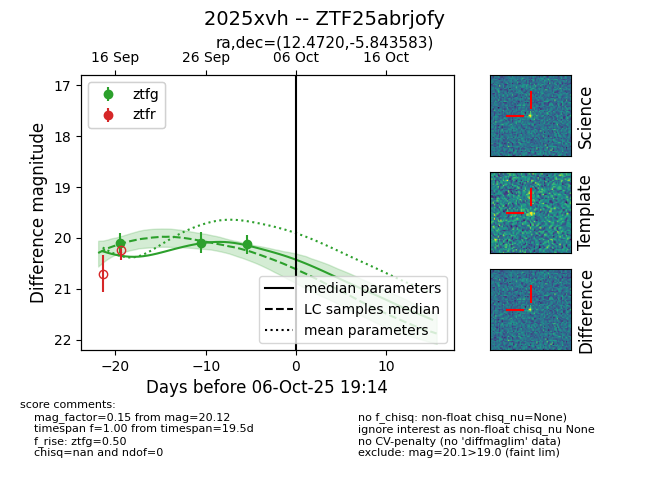
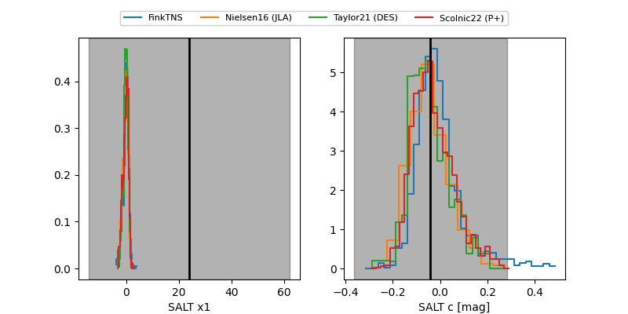

FINK: ZTF25abrjofy
Lasair: ZTF25abrjofy
ALeRCE: ZTF25abrjofy
TNS: 2025xvh
YSE: 2025xvh
ZTF25abrjofy (ztf,fink)
2025xvh (tns,yse)
equatorial (ra, dec) = (12.4720,-5.84358)
galactic (l, b) = (121.8701,-68.71213)


last ztfg=20.12
3 ztfg detections